Ветка feat/calc2-input. Слева светлая тема, справа тёмная.
Числа проверены прибором calc2/tests/input_probe.mjs (наборы К, П, Ш, В, Ф, З, Я)
и случаями (кадр-а)…(кадр-е), (конс-а), (конс-б), (панель-а) в
calc2/tests/calc2_math.mjs; эти снимки — для глаз.
D 100−Q, MC 20, окно сужено до Q = 30 — то есть оптимум монополии лежит ЗА краем кадра. Раньше findRoot искал MR = MC только до края окна, корень 40 туда не попадал, и всё табло монополии гасло: ни выпуска, ни цены, ни конкурентного объёма. Теперь область поиска берётся у самих кривых: числа те же, что на любом другом масштабе, и в «Ключевых значениях» они есть.
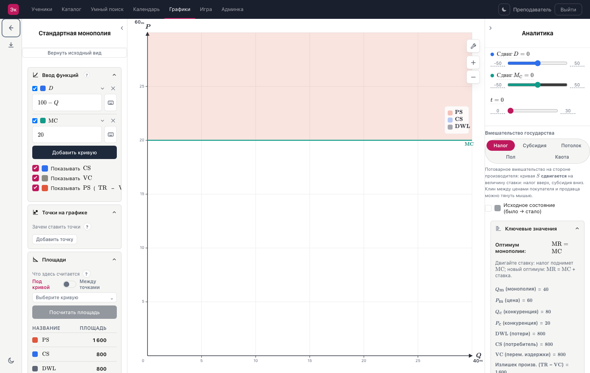
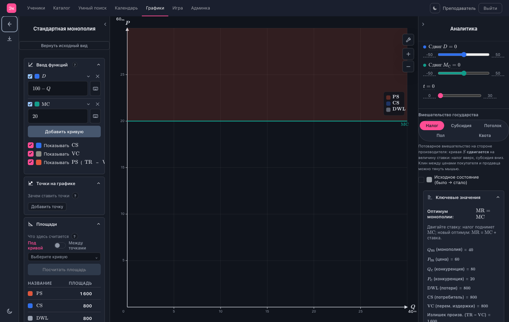
Собрана конструктором и поставлена в поле. Запись видна ЦЕЛИКОМ: и формулы, и оба условия. Раньше содержимое было 236 px в окне 151 и обрывалось на слове «если» — обрезка живёт внутри MathLive, снаружи поле выглядело исправным. Строка отдала полю всю ширину (кнопка клавиатуры переехала под него), кегль подобран до 12,0 px.
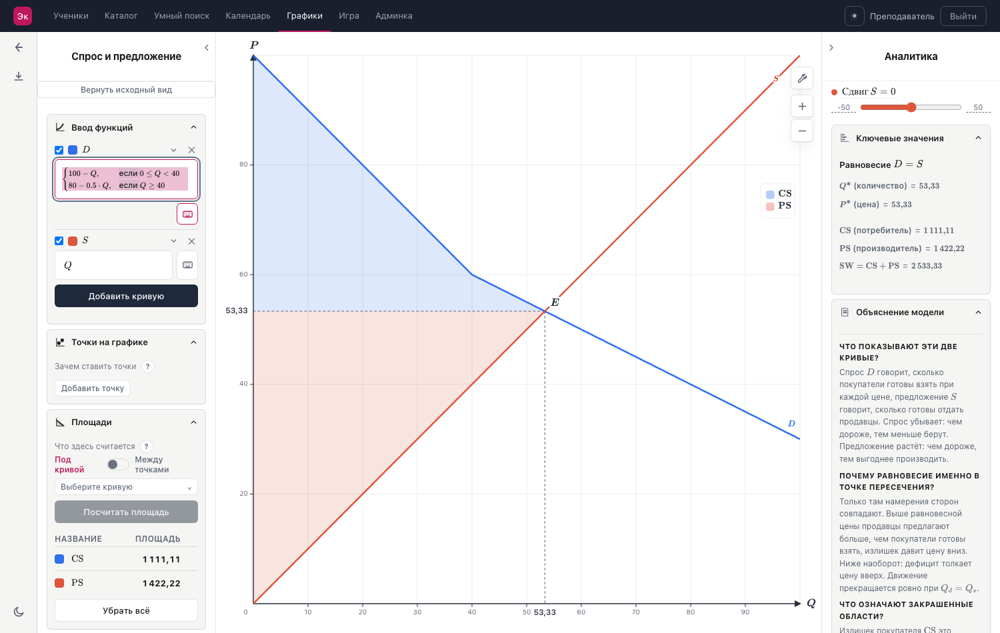
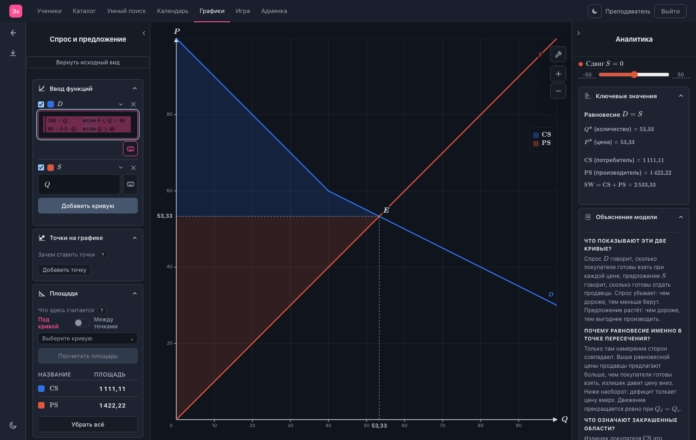
То же самое на трёх участках. Кегль 11,2 px — выше нижнего предела 11 px, ниже которого запись не сжимается. Соседняя строка предложения осталась однострочной, карточка «Ввод функций» не разъехалась.
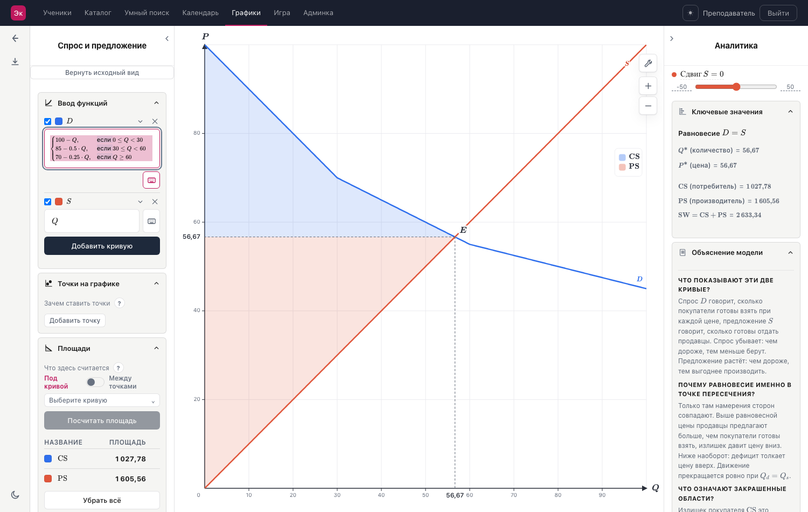
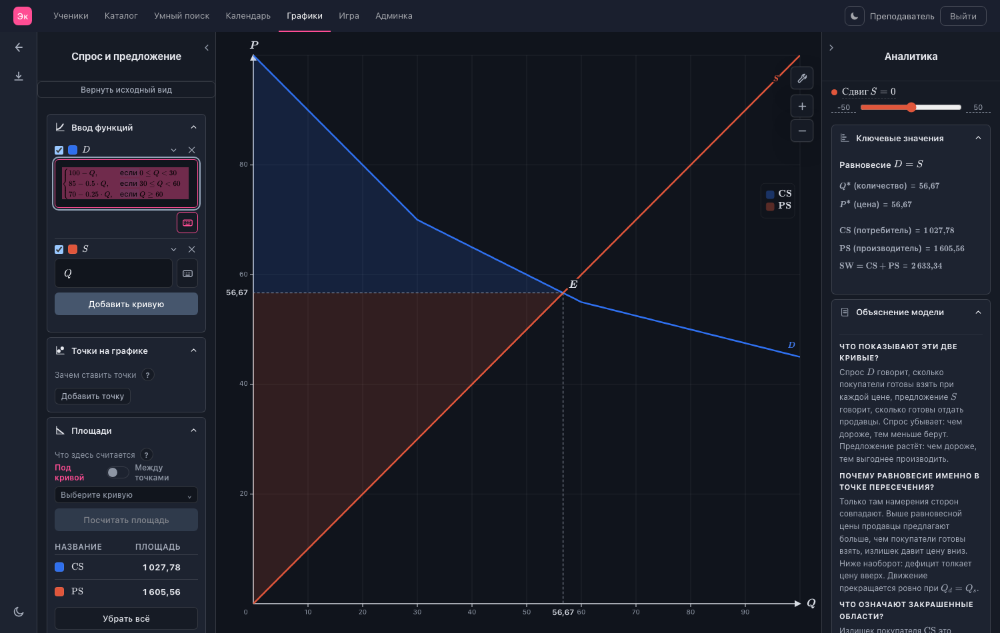
Смотреть на вопросики. Было: два знака висели в пустых строках посреди панели при НУЛЕ живых подсказок у сцены — подсказка без якоря получала собственную пустую строку `.help-anchor`. Стало: таких строк в разметке ноль, знак появляется только рядом с тем, что он поясняет, и только если у него есть живая подсказка.
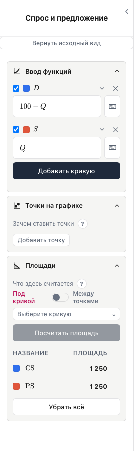
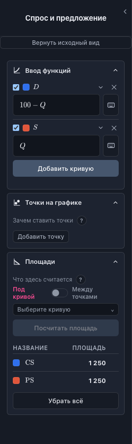
Курсор наведён на первую карточку («Математика»). Рамка малиновая — та же, что у любой другой карточки. Раньше правило гашения кольца весом било `:hover`, и первая карточка под курсором оставалась серой, пока не нажмёшь клавишу. Светлого кольца клавиатурного фокуса при этом нет: мышь его не будит.
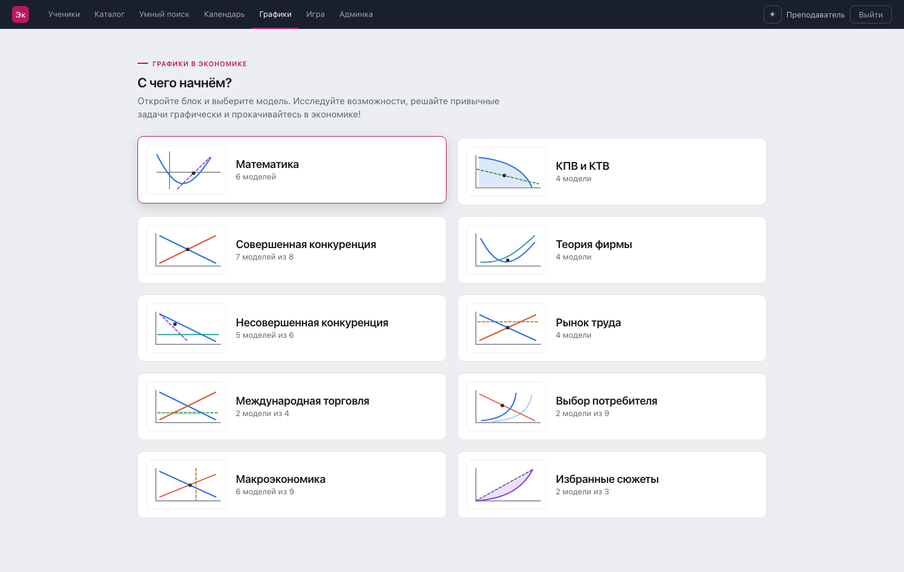
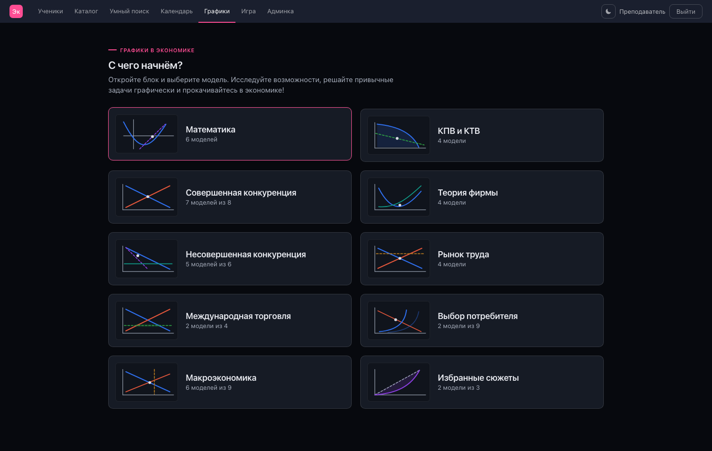
Четыре группы спроса — в записи рыночного спроса четыре участка. Правая панель прокручена к «Объяснению модели». Было: содержимое 239 px во врезке шириной 215, запись уезжала за правый край. Стало: кегль подобран вниз (12,0 и 13,2 px при нижнем пределе 10 px), обе записи целиком внутри панели.
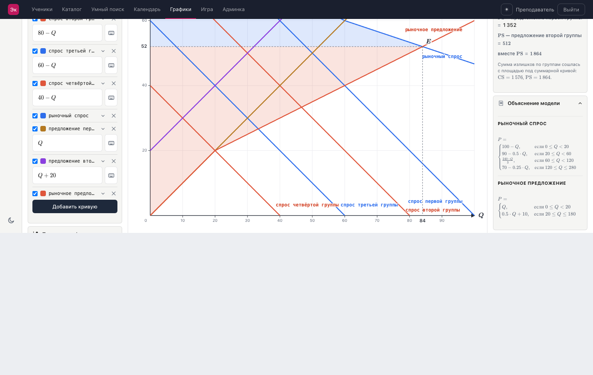
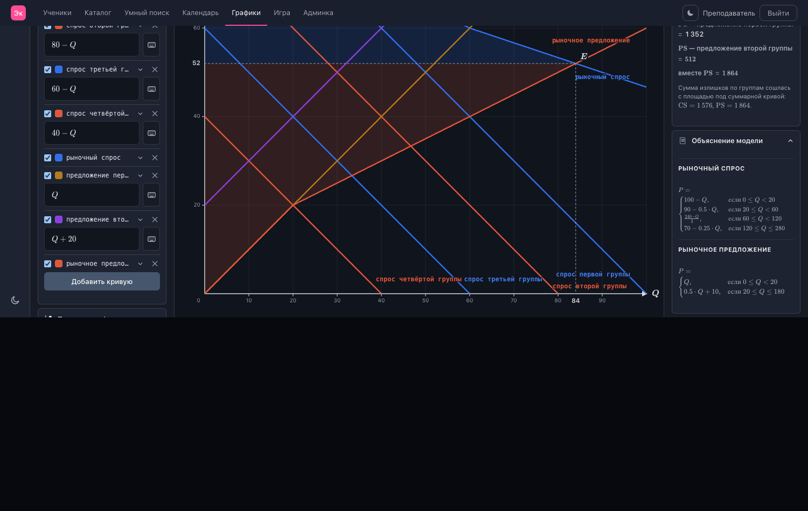
Панель на таком экране всего 200 px, и обычная запись «формула, если условие» не помещается ни при каком читаемом кегле. Условие переезжает под свою формулу — поле растёт в высоту, как и решил владелец. Горизонтальной обрезки нет, кегль на нижнем пределе 11 px, запись разбирается обратно в ту же цепочку условий.
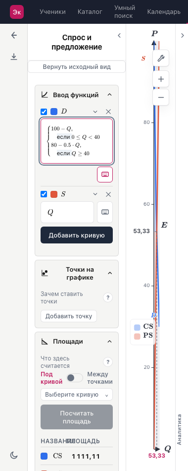
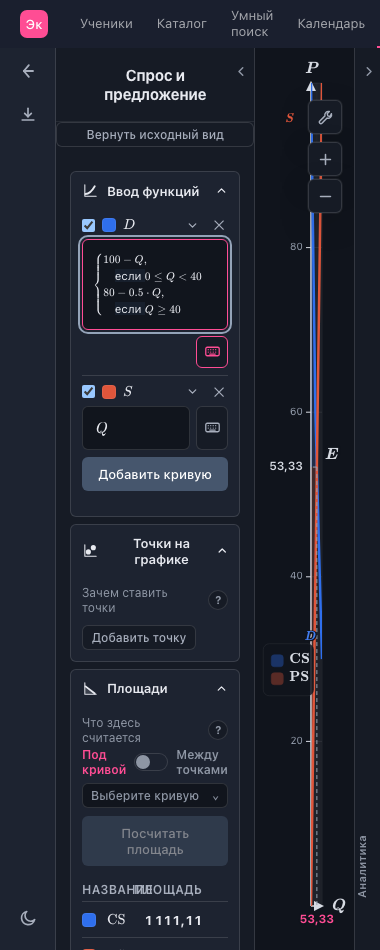